PART1：定价分析
背景
固定票息票据（Fixed Coupon Note，FCN）是一类典型的结构化产品。想理解 FCN，首先需要认识一种特殊的期权——障碍期权（Barrier Option）。普通期权的收益通常只取决于到期时标的资产的价格，而障碍期权会额外设置一个或多个价格障碍：只要标的资产在存续期内触碰某个障碍，期权的状态就可能发生改变。常见的形式包括敲入（Knock-In）和敲出（Knock-Out），前者意味着某种风险敞口被激活，后者则往往意味着产品提前终止。FCN 的 Payoff 结构与雪球产品非常类似，投资者通过承担一定的标的资产下行风险，换取相对较高且通常事先约定的票息收益。
本课题的目标，是设计并研究一款利率挂钩 FCN 产品。首先需要明确的是，中国市场上绝大部分 FCN 产品都与单只股票或一篮子股票挂钩，因此利率挂钩 FCN 并不是最常见的产品形态。然而从金融工程的角度来看，只要能够合理描述标的利率的随机过程，并根据合约条款定义敲入、敲出和到期支付结构，就可以采用与股票类 FCN 类似的方法进行定价。
蒙特卡洛定价（MC）
接下来考虑如何利用蒙特卡洛方法对一只 FCN 进行定价。基本思路非常直接：首先根据假设的随机过程模拟出N条未来利率路径；然后对每一条路径逐日检查是否触发敲出或敲入条件，并根据对应情形计算最终 Payoff；随后将每条路径的现金流折现回当前时点；最后对全部模拟路径的现值取平均，得到 FCN 的理论价值。因此，蒙特卡洛定价的核心其实只有两部分：一是如何模拟未来的利率路径，二是如何根据每条路径计算 FCN 的 Payoff。
对于股票价格，我们最常见的假设是几何布朗运动（Geometric Brownian Motion，GBM）：\(dS_t=\mu S_tdt+\sigma S_tdW_t\)。GBM 的一个重要特征是，随机波动的大小与当前价格水平成比例，因此它更适合描述股票这类以百分比收益率为核心的资产。同时，GBM 模型能够保证 \(S_t > 0\)，这对于股票价格是一个合理性质。但利率与股票存在明显差异。股票价格通常不存在一个明确的长期均衡水平，而利率具有较强的宏观经济和货币政策约束：当利率过高时，经济活动受到抑制，未来往往存在下降压力；当利率过低时，又可能受到通胀、政策正常化等因素影响而回升。因此，利率通常表现出一定的均值回复特征。此外，利率的变化更适合用“绝对变化”描述，例如从 3.0% 上升到 3.1% 是上升 10BP，而不一定需要强调它上涨了多少百分比；历史上部分经济体甚至出现过负利率（如日本），这也意味着保证变量始终为正的 GBM 并不一定适合描述利率。
因此，在较简单的建模框架下，可以假设利率服从算术布朗运动（Arithmetic Brownian Motion，ABM）：
\(dr_t=\mu dt+\sigma dW_t\)
其中， \(\mu\)表示利率的平均漂移速度， \(\sigma\)表示利率波动率， \(W_t\)为标准布朗运动。离散化后可以写为
\(r_t+\mu\Delta t+\sigma\sqrt{\Delta t}Z_t \qquad Z_t \sim N(0,1)\)
ABM 的优点是结构简单，并且利率增量服从正态分布，非常适合用来理解蒙特卡洛定价的基本过程。另外一种更符合利率经济特征的一种模型，是带有均值回复机制的 Ornstein-Uhlenbeck（OU）过程。在利率建模中，最经典的形式就是 Vasicek 模型：
\(a(b-r_t)dt+\sigma dW_t\)
其中，b表示长期均衡利率，a 表示均值回复速度。当 \(r_t>b\) 时， \(b-r_t<0\)，模型会产生向下的漂移；当 \(r_t \(r_t+a(b-r_t)\Delta t+\sigma\sqrt{\Delta t}Z_t\) 在本课题中，我分别使用 ABM 和 Vasicek 模型模拟未来利率路径。为什么我会认真考虑ABM而不是看似更加合理的Vasicek? ABM虽然不存在一个长期的利率水平，但是纵观历史，美国的10年期国债收益率其实更难用OU过程去衡量（长期漂移）。 接下来，我们来考虑FCN的payoff结构： 第一种，未敲入未敲出。在整个存续期内，标的利率既没有触发敲入障碍，也没有在观察日触发敲出障碍，产品通常持有至到期，投资者获得名义本金和约定票息，因此其到期收益可以写为： \(\text{Payoff}_1 = N(1+cT)\) 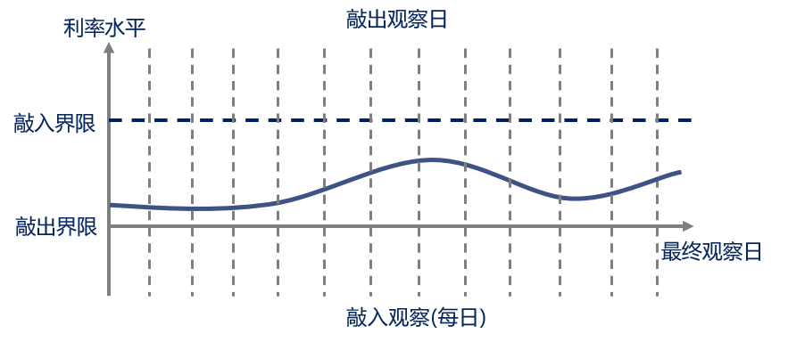 第二种，敲入未敲出。这种情况下，产品在存续期内曾触发敲入事件，但直到到期都没有发生敲出。此时 FCN 的“保护性”消失，投资者需要承担标的利率不利变动所带来的损失。 \(\text{Payoff}_2 = N\bigl(1+cT - \displaystyle\frac{r_T - r_0}{r_0})\) 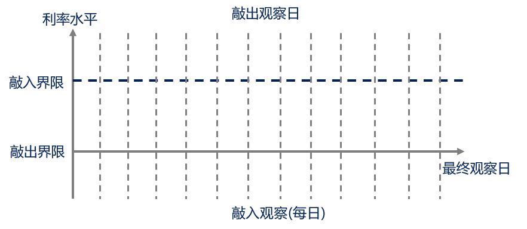 第三种，敲出（无论是否敲入）。只要产品在某个观察日满足敲出条件，就视为提前终止，投资者提前收回本金并获得截至敲出时点的票息收入。 \(\text{Payoff}_3 = N(1+c\tau)\) 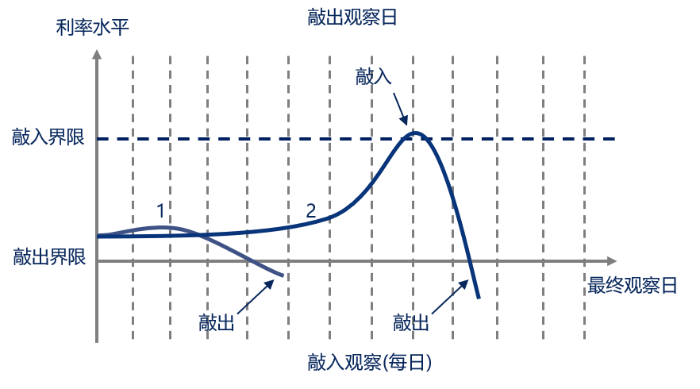 payoff的代码部分如下，这里需要注意：KO的判断逻辑与KI的判断逻辑不一样，当在KO观察日触发KO以后，这条路径就结算并计算payoff，即中止循环；而KI的触发则具有记忆性，即首次触发就将ki_flag标记为True，后续不断把原来的状态和新状态做析取（OR）。后续再将未KO的样本根据是否KI分为safe和risky两个状态分别计算payoff。 模拟结果显示，67.8% 的路径最终敲出，包含先敲入后敲出的情形，约 22.7% 的路径敲入后始终未敲出，因而保留了到期下行损失风险，另有约 9.5%的路径既未敲入也未敲出。整体来看，由于敲出界限距离初始利率较近，产品较容易提前终止，而真正进入“敲入且存续至到期”高风险状态的路径占比相对较低。 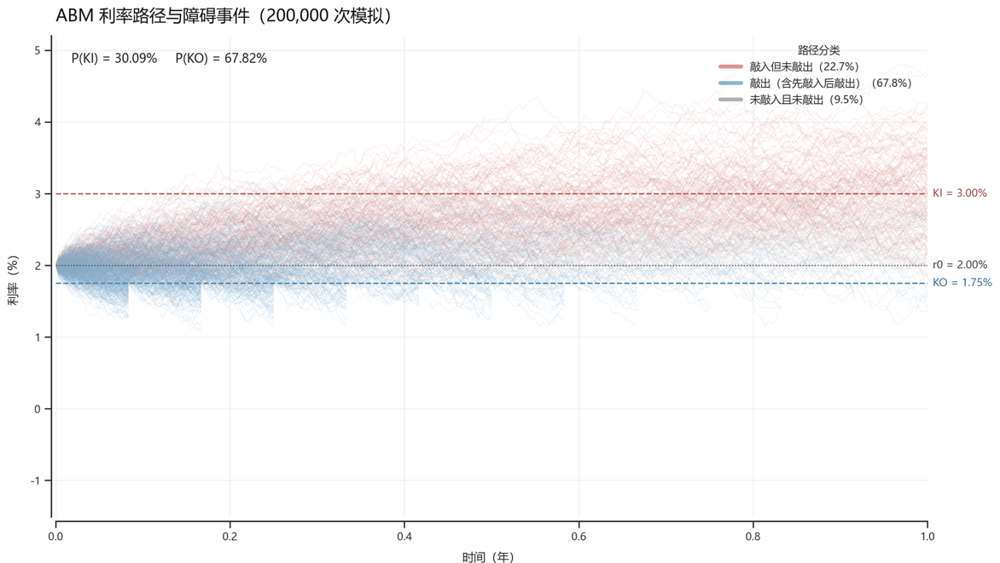 接下来，我们考虑一种基于傅里叶方法的结构化产品定价： 为了利用傅里叶方法对 FCN 进行定价，首先将连续时间区间 \([0,T]\) 离散为 \(M\) 个时间步： 记利率状态变量为 \(X_t=r_t\)。在 ABM 模型下，利率在相邻两个时点之间满足： 因此，给定当前利率 \(X_{t_m}=x\)，下一时点利率可以写为： 其中利率增量服从正态分布： 其概率密度函数为： 假设下一时点 \(t_{m+1}\) 的价值函数为 \(V_{m+1}(x)\)，则在当前利率为 \(x\) 的条件下，下一时点价值的条件期望为： 代入 ABM 的转移分布，可以得到： 该积分本质上是价值函数与利率增量概率密度之间的卷积。若直接在每个利率网格点上计算该积分，计算复杂度较高。因此，可以利用傅里叶变换将空间域中的卷积转化为频率域中的乘法。 定义函数 \(f(x)\) 的傅里叶变换为： 相应的逆傅里叶变换为： 对条件期望函数 \(C_m(x)\) 进行傅里叶变换： 将条件期望的积分表达式代入，可以得到： 令 \(y=x+z\)，即 \(x=y-z\)，则有： 因此： 第一部分是下一时点价值函数的傅里叶变换： 第二部分是利率增量 \(\Delta X\) 的特征函数： 由于： 正态随机变量的特征函数为： 于是，条件期望在傅里叶空间中的表达式为： 再进行逆傅里叶变换，即可得到当前状态下的条件期望： 考虑一个时间步的贴现后，当前时点的价值函数为： 因此，一步 Fourier 回溯可以写为： 这里采用 \(e^{-x\Delta t}\) 作为一个时间步的贴现因子，即使用区间左端点的利率进行贴现。该设定与后续 Monte Carlo 方法中的离散贴现口径保持一致。 接下来看FFT的代码： 这里面需要注意的点是：np.pad的作用是缓解 FFT 的周期边界误差。因为 FFT 会默认输入序列是周期重复的，所以如果直接对有限区间上的价值函数做卷积，右边界会被错误地接到左边界；因此代码先在原价值函数两侧补上一段额外区域，再在更大的区间上做 FFT，使这种周期连接发生在离真正计算区间更远的位置，最后再把补出来的部分裁掉，只保留中间原始网格。 这段代码的核心设计思路是：先在整个利率网格上分别维护“已敲入”和“未敲入”两条价值函数，并从到期日开始，根据 FCN 的终值结构初始化 payoff；随后沿时间反向逐步回溯，在每个时点先判断下一期利率状态是否触发 KI，从而在两条价值函数之间切换，再在 KO 观察日把满足敲出条件的区域直接替换为即时兑付现金流，最后通过 Fourier 方法计算从下一时点价值到当前时点价值的条件期望并贴现。它与 MC 最大的区别在于，MC 是从 t=0向未来模拟大量随机利率路径，对每条路径逐日判断 KI、KO，最后对所有路径的折现 payoff 取平均；而 Fourier 方法完全不生成随机路径，而是在所有可能的利率状态上直接维护价值函数，并从 T 向 0 反向递推，通过 FFT 直接计算一步条件期望。 现在万事俱备只欠东风，我们现在分别运行一下两个程序，观察两种定价方法是否给出接近的结果： 可以看到二者的定价结果还是非常接近的，相对误差仅有0.08%。如果把MC方法得到的FCN价值作为定价基准，这个结果说明FFT方法较为出色地完成了对FCN的定价。不过仅有单一参数组合并不能说明。下面我们进行敏感性分析。 我们对参数空间的搜索范围如下： 第一组参数：敲入距离 \(| KI - r_0|\)与敲出距离 \(| KO - r_0|\) 随着敲入距离 \(\lvert KI-r_0\rvert\) 从约40bp扩大至200bp，FCN价值显著上升。原因在于KI位于当前利率上方，敲入障碍越远，未来利率触及KI的概率越低，产品进入“敲入未敲出”状态并承担利率上涨损失的可能性下降，因此投资者预期损失减少，产品价值逐渐接近“本金加固定票息”的安全兑付水平。图中曲面沿KI方向上升最为明显，说明FCN对敲入障碍设置高度敏感。 相比之下，敲出距离 \(\lvert KO-r_0\rvert\) 对FCN价值影响则较为复杂： 当敲入距离较小时，例如 \(r_0 = 2\%\)价值大致分布在89—104之间，而 \(r_0 = 5\%\)时主要集中在96—102之间，说明高利率环境下FCN对障碍距离的敏感性有所下降。 从不同的初始利率水平来看，随着 \(r_0\)从2%增大到5%，曲面的价值变化区间明显收窄。 最后，MC与FFT得到的价格曲面几乎完全重合，绿色误差曲面在进行位置偏移后仍较为平坦，说明两种方法在价格水平上具有较高的一致性。 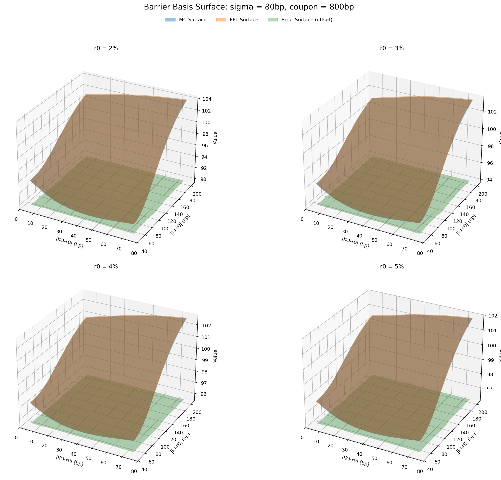 第二组参数：ABM过程的波动率 \(\sigma\) FCN对ABM波动率 \(\sigma\) 呈现显著的负Vega特征：在敲入、敲出距离和票息固定时，随着波动率由约10bp上升至200bp，四种初始利率情形下的FCN价值均持续下降。其核心原因在于，波动率上升会扩大未来利率路径的分散程度，使利率触及上方KI障碍的可能性及敲入后的潜在损失同步增加。后续我们还会进一步分析其Vega的特征。 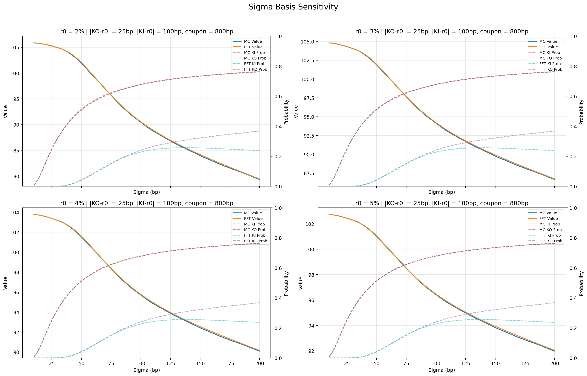 第三组参数：ABM过程的波动率 \(\sigma\)票息率 \(C\) 接下来，我们来看一下FCN的Greeks， 与股票类似地，Delta表示产品对标的（利率）一阶敏感度，\(\Delta = \frac{\partial V}{\partial r}\)。Gamma表示产品对标的（利率）二阶敏感度，即对Delta的敏感程度，\(\Gamma = \frac{\partial ^2V}{\partial r^2}\) 。（图中横轴表示 \(r_0\)与KO的距离，纵轴表示Greeks值） 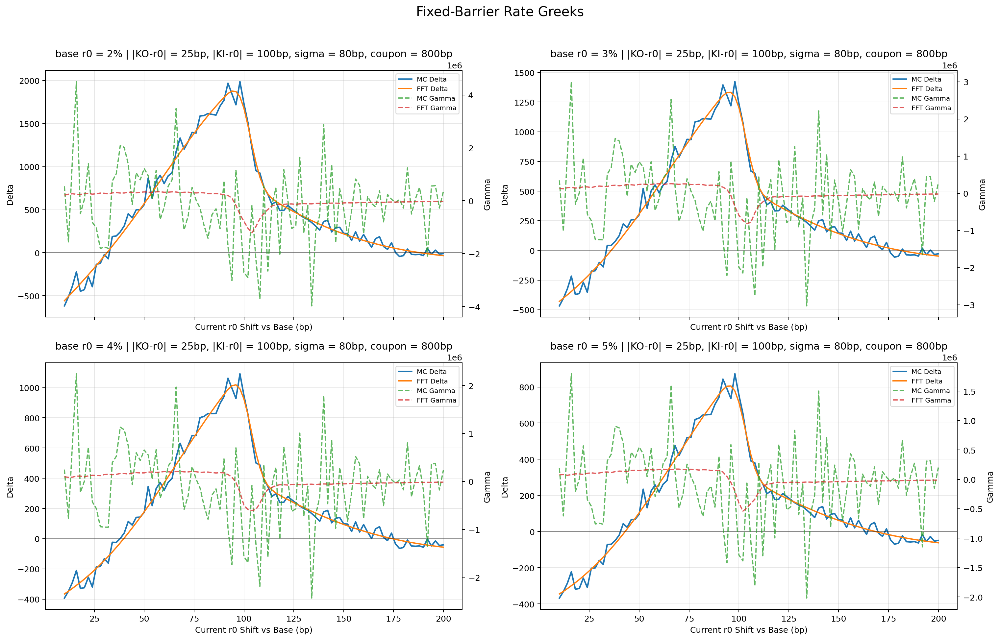 Vega表示产品对标的波动率的敏感度（\(Vega = \frac{\partial V}{\partial \sigma}\)）。随着当前利率逐步上移，Vega整体由较大的负值向零靠近，但在上移约100bp、即当前利率接近固定KI障碍的位置附近，曲线出现明显的局部下探。此时利率路径是否越过KI对产品状态和最终现金流影响最大，波动率的小幅变化就会显著改变敲入概率，因此FCN对波动率的敏感度再次增强，Vega变得更负。当前利率继续上移并超过KI后，敲入概率逐渐接近饱和，波动率对“是否敲入”的边际影响下降，所以Vega绝对值快速减小并趋近于零。 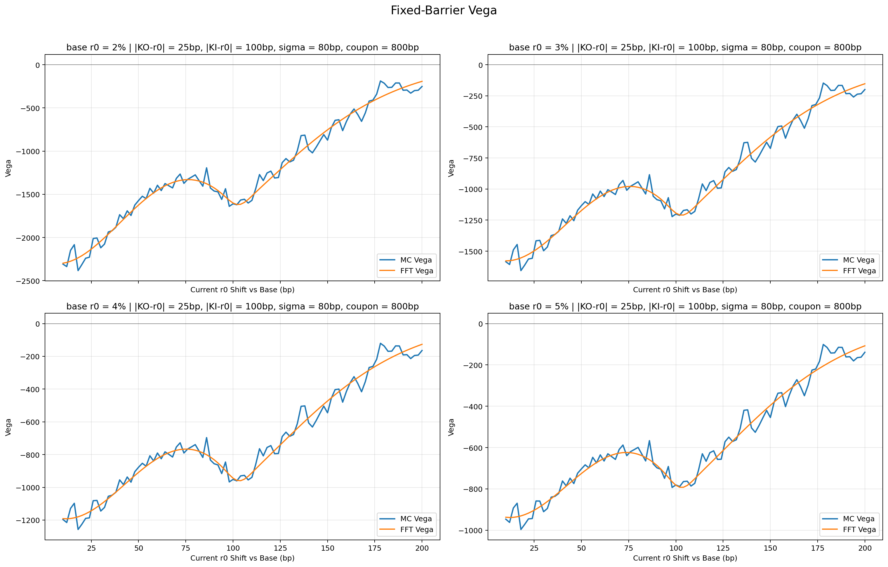 当前的蒙特卡洛的路径数是20000，会不会只是蒙特卡洛的路径数不够，导致FCN的Greeks出现如此大的震荡呢？我们分别设定蒙特卡洛模拟的路径数为20000、200000、1000000，观察震荡最严重的Gamma是否能够收敛。结果可以看到，增大路径数确实可以在一定程度上缓解Gamma的震荡。然而值得一提的是，当路径为100万条时，单次估值在90秒左右，总体运行时长在2-3个小时。 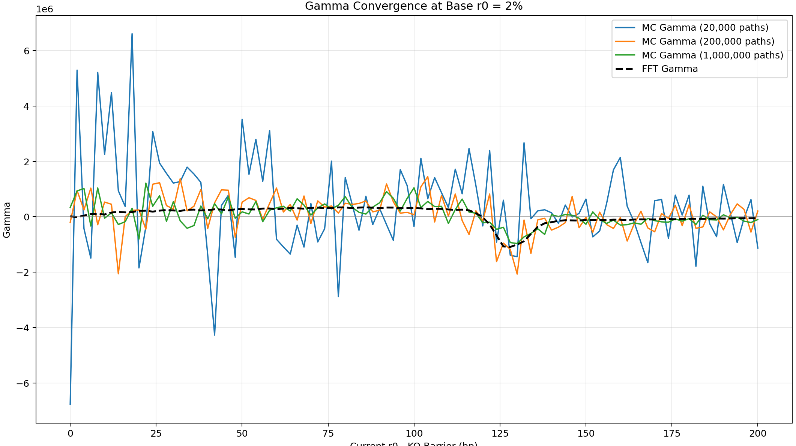 在股票挂钩的衍生品中，我们通常使用 Delta、Gamma 等希腊字母来衡量产品对标的资产价格变化的敏感度。例如，如果持有一份看涨期权空头头寸，由于看涨期权本身的 Delta 为正，因此空头头寸的 Delta 为负。为了降低股票价格变化带来的风险，可以买入一定数量的标的股票，使“期权空头的 Delta + 股票头寸的 Delta”尽可能接近 0。此时，标的资产小幅变化造成的期权损益，可以由股票头寸的反向损益进行抵消。 与股票挂钩衍生品类似，利率挂钩衍生品也需要衡量产品价值对市场利率变化的敏感度。这里使用的核心指标是 DV01（Dollar Value of 1 Basis Point），表示市场利率变化 1 个bp( 0.01） 时，金融产品价值大约变化多少。 本研究采用 10 年期美债期货 TY 作为 FCN 的对冲工具。原因是 FCN 的标的变量本身就是 10 年期美债收益率，因此 TY 与 FCN 面临相同的核心利率风险因子；同时，美债期货具有流动性较高、合约标准化和便于动态调整仓位等特点。当美债收益率上升时，美债期货价格通常下降；当收益率下降时，美债期货价格通常上升，因此可以利用 TY 的价格变化对冲 FCN 的利率敏感度。在具体实现中，需要分别计算 \(DV01_{FCN}^{MC},\quad DV01_{FCN}^{FFT}, \quad DV01_{TY}\)。 对于 FCN 这种带有敲入、敲出等路径依赖特征的结构化产品，很难像普通债券一样直接使用久期公式。因此，代码采用 bump-and-revalue，即“扰动后重新定价” 的方法计算 DV01，即： \(\displaystyle\frac{V(y_t+1bp) - V(y_t-1bp)}{2}\) 这里有一个非常重要的细节：向上扰动和向下扰动时，MC 使用完全相同的一组随机数，即公共随机数方法（Common Random Numbers，CRN），大幅减少蒙特卡洛模拟本身的随机噪声。此外，FCN 的 DV01 并不是一个固定值，而是每天变化的。每一个交易日，代码都会根据当前收益率、剩余期限、KI KO状态等参数动态计算DV01。而FFT的DV01计算则更加简单，直接对当前利率进行 \(\+1bp\) 和 \(\-1bp\) 的扰动，再分别调用 Fourier 定价函数进行重新定价即可。 如何计算国债期货的DV01？这里我采用了久期近似法，即： \(P_{TY,t} \times D_{TY} \times 0.0001 \times M\)。其中M取1000，D取6.5。需要说明的是，这是一种简化的久期近似。更严格的美债期货 DV01 需要考虑最廉券（Cheapest-to-Deliver，CTD）、转换因子等问题。本人本科的时候接触过这些概念，但是当时也是学的晕乎乎的，这里正好重新梳理一下： 最重要是理解：10 年期美债期货 TY 并不是“到期交割某一只固定的 10 年期国债”。它对应的是一个“可交割债券篮子”，期货空头在满足合约规则的若干只美债中选择一只交给多头。那么空头必然是选择对其来说“最经济”的券，即最廉券。简单来说，空头会比较基差（Basis = S - F），基差越低，交割越经济。那么问题又来了，一个国债篮子里票息、剩余期限、市场价格都不同。空头就会机械地选择市场价格最低的那只债，那其他可交割券几乎永远没有竞争力，“可交割券篮子”实际上名存实亡，期货合约几乎等于绑定了最低价那只债。这个时候就要引入转换因子（Convertion Factor, CF）把不同债券“折算”到同一个标准上。但是，转换因子不可能完美地消除所有差异。不同债券的实际市场收益率、融资成本、久期和凸性仍然不同，因此最终总会有一只债券比其他债券更划算，它就成为 CTD。因此，TY 本身并不是一只债券，它的价格主要跟随当前的 CTD，一张国债期货更加严格的 DV01 近似为： \(DV01 = \displaystyle\frac{DV01_{CTD}}{CF_{CTD}}\) 扯远了，我们回归正题。由于获取不到美债期货的最廉券与折现因子数据（其实是懒得找），我们直接用久期近似计算美债期货的DV01。 发行人相当于持有 FCN 空头，因此发行人的利率风险方向与产品本身相反。举一个简单例子，假设利率上升 1bp 时，FCN 的价值下降 500 美元。空头获利500美元。由于利率上升通常对应 TY 价格下降，因此此时应该做多 TY 期货。收益率上升时，FCN 空头盈利，而 TY 多头亏损，两者相互抵消，即DV01对冲。对冲的结果如下： 我们首先选择了2023.01 - 2024.01这个区间发行FCN产品，每日进行动态重新估值。2023年1月至2024年1月，10年期美债收益率先因通胀黏性、经济韧性和美联储“高利率维持更久”的预期上升，随后在银行业风险和衰退担忧下回落；进入下半年后，又受到强劲经济数据、国债供给增加和期限溢价抬升推动接近5%，最终随着通胀降温和市场提前交易2024年降息而快速下行。从美债价格（归一化）和FCN价值对比图中我们可以看出，二者基本上均与利率呈现负相关，但FCN在利率小幅变化时更为稳定，而当收益率接近KI区域时价值会快速下跌。 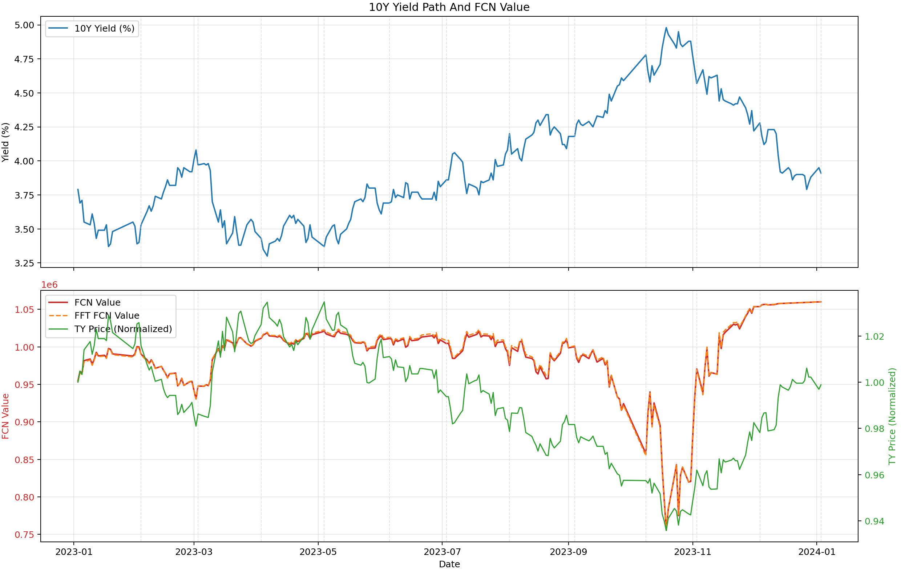 从对冲PnL曲线图中我们可以看出：未对冲的FCN累计PnL波动非常剧烈，2023年10月收益率接近高点时一度盈利约20万元，随后随着收益率快速回落，PnL急剧反转，期末累计亏损约10.5万元，说明FCN价值对利率方向高度敏感。加入美债期货对冲后，PnL的波动明显收窄。不过，对冲PnL在10—11月仍出现较大跳动，说明单纯使用DV01只能对冲局部线性风险。当利率接近KI或KO障碍时，FCN的DV01、Gamma和敲入敲出概率会快速变化，再加上每日离散调仓、期货与收益率之间的基差风险，因此会留下较明显的残余PnL。 红色和紫色曲线几乎完全重合，说明MC与FFT计算出的FCN价值和未对冲PnL高度一致；但绿色与橙色对冲结果差异较大，说明两种方法的DV01或对冲手数计算存在明显差异。FFT对冲PnL最终接近0，而MC对冲PnL累计约4万元，这与此前的敏感性分析结果相互印证：MC在Greeks估计精度明显不足，从而削弱了动态对冲的稳定性。 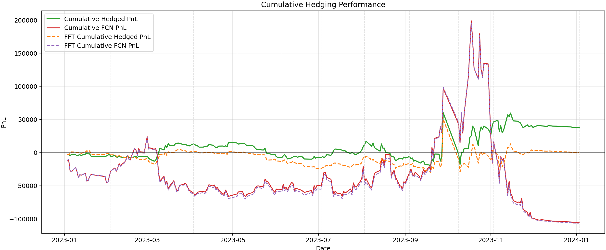 DV01和期货持仓曲线图与上面反映的信息一致，使用FFT方法计算DV01可以更好的平滑仓位，减少由于计算误差带来的风险敞口。 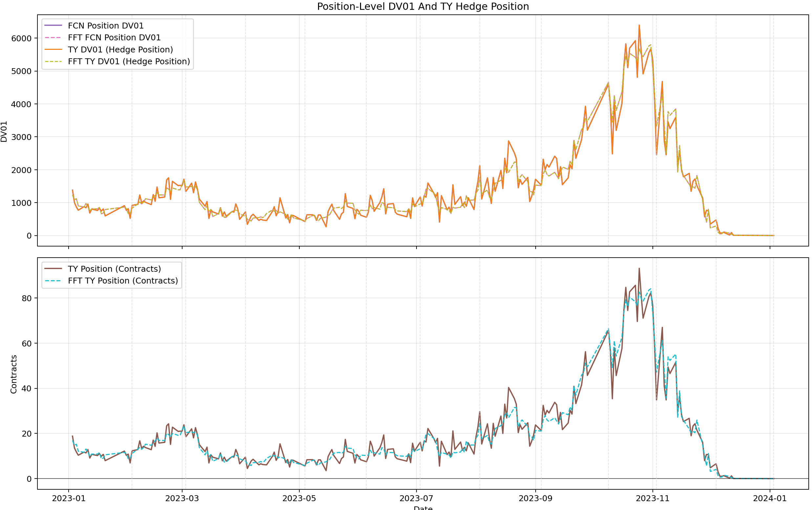 最后，我们从 基准情况下：样本整体敲出概率57.6%，敲入概率18.6%。按最终对冲 PnL 看，MC平均更高，MC的平均对冲后收益为98267，高于FFT的57031；同时，MC在59.3%的窗口内最终对冲收益优于FFT。但如果看“对冲是否真的降低波动/改善相对裸露仓位”，FFT更稳定。FFT在94.9%的窗口内把对冲后波动压低了，而MC只有49.2%。 （这里要把利率上涨、利率下跌、利率震荡的情况分别拿出来看） 收益归因： 接下来，我们将日度动态重估改为周度动态重估（每周计算一次DV01，但是FCN价值仍需要每日重算，以确定是否发生敲入敲出） 分析日度对冲和周度对冲的交易成本 最后，我们再尝试一下Vasicek模型的定价结果，看看与ABM过程定价有什么区别： 整体来看，MC 与 FFT 在定价结果上非常接近，说明两种方法都能够较好地刻画 FCN 的价值；但在 Greeks 估计和动态对冲中，FFT 的结果明显更加平滑和稳定，而 MC 即使增加路径数，也仍然会受到随机误差和计算成本的限制。这里的很多设定仍然比较简化，尤其是美债期货 DV01、CTD、基差风险以及障碍附近的非线性风险，以及经典的PDE定价方法我也没有在这里涉及，后续还有继续完善的空间。不过至少到这里，定价、敏感性和对冲已经基本连成了一条完整的链路。def simulate_vasicek(n_paths, n_steps, dt, r0, a, b, sigma):
"""生成包含 t=0 到 t=T 共 n_steps+1 个时点的 Vasicek 路径。"""
r = np.zeros((n_paths, n_steps + 1))
r[:, 0] = r0
for t in range(1, n_steps + 1):
z = np.random.normal(size=n_paths)
r[:, t] = (
r[:, t - 1]
+ a * (b - r[:, t - 1]) * dt
+ sigma * np.sqrt(dt) * z
)
return r
def simulate_cir(n_paths, n_steps, dt, r0, a, b, sigma):
"""生成包含 t=0 到 t=T 共 n_steps+1 个时点的 CIR 路径。"""
r = np.zeros((n_paths, n_steps + 1))
r[:, 0] = r0
for t in range(1, n_steps + 1):
z = np.random.normal(size=n_paths)
r_prev = np.maximum(r[:, t - 1], 0.0)
r[:, t] = (
r_prev
+ a * (b - r_prev) * dt
+ sigma * np.sqrt(r_prev) * np.sqrt(dt) * z
)
return r
def simulate_normal(n_paths, n_steps, dt, r0, mu, sigma):
"""算术布朗运动路径。"""
r = np.zeros((n_paths, n_steps + 1))
r[:, 0] = r0
for t in range(1, n_steps + 1):
z = np.random.normal(size=n_paths)
r[:, t] = r[:, t - 1] + mu * dt + sigma * np.sqrt(dt) * z
return rdef fcn_rate_payoff(
r_paths, # r_paths.shape = (N, 253)
ki_barrier,
ko_barrier,
coupon,
dt,
ko_observation_freq="monthly",
notional=1.0,
):
n_paths, n_time_points = r_paths.shape
n_steps = n_time_points - 1
cashflow_amount = np.zeros(n_paths)
payment_step = np.full(n_paths, n_steps, dtype=int)
ki_flag = np.zeros(n_paths, dtype=bool)
ko_flag = np.zeros(n_paths, dtype=bool)
ko_observation_steps = set(_build_observation_steps(n_steps, dt, ko_observation_freq).tolist())
r0 = r_paths[:, 0]
for t in range(1, n_steps + 1):
active = ~ko_flag
if not np.any(active): # 如果判断为KO，则中止
break
r_t = r_paths[:, t]
# KI 为存续期内每日观察，但已经 KO 的路径不再参与任何事件判断。
ki_flag[active] |= r_t[active] >= ki_barrier # 析取操作（KI具有路径依赖性）
if t in ko_observation_steps:
# KO 仅在约定观察日判断，首次 KO 后立即锁定现金流和支付时点。
new_ko = active & (r_t <= ko_barrier)
if np.any(new_ko):
t_years = t * dt
cashflow_amount[new_ko] = notional * (1.0 + coupon * t_years)
payment_step[new_ko] = t
ko_flag[new_ko] = True
remain = ~ko_flag
r_T = r_paths[:, -1]
safe = remain & (~ki_flag)
cashflow_amount[safe] = notional * (1.0 + coupon)
risky = remain & ki_flag
loss_ratio = (r_T[risky] - r0[risky]) / r0[risky]
cashflow_amount[risky] = notional * (1.0 + coupon - loss_ratio)
return cashflow_amount, payment_step, ki_flag, ko_flag基于傅里叶变换的条件期望回溯定价（FFT）
\_abm\_fourier\_expectation\_step负责根据 ABM 的正态转移分布，用 FFT 将空间域中的卷积转化为频率域乘法，从而计算下一时点价值函数在当前状态下的条件期望（推导在前面，不赘述了）。abm\_fourier\_step 再在这个条件期望基础上乘上折现因子，完成 \(t+\Delta {t} \to t\)一步价值回溯。def _abm_fourier_expectation_step(value, x_grid, mu, sigma, dt, pad_size):
"""先做条件期望卷积，不包含贴现，便于价格和事件概率共用。"""
dx = x_grid[1] - x_grid[0]
value_pad = np.pad(value, pad_size, mode="edge")
k = 2 * np.pi * np.fft.fftfreq(value_pad.size, d=dx)
multiplier = np.exp((1j * mu * k - 0.5 * sigma**2 * k**2) * dt) # 特征函数
continuation_pad = np.fft.ifft(np.fft.fft(value_pad) * multiplier).real # FFT核心，注意取实部
return continuation_pad[pad_size:-pad_size]
def abm_fourier_step(value, x_grid, mu, sigma, dt, pad_size):
"""
在算术布朗运动下做一步傅里叶回溯:
V(t, x) = exp(-x * dt) * E[V(t + dt, X_{t+dt}) | X_t = x]
这里贴现使用区间左端点 x，与 montecarlo.discount_factor 的离散口径保持一致。
"""
continuation = _abm_fourier_expectation_step(value, x_grid, mu, sigma, dt, pad_size)
return np.exp(-x_grid * dt) * continuationdef price_fcn_abm_fourier(
r0=0.04,
mu=0.00,
sigma=0.01,
notional=1.0,
T=1.0,
n_steps=252,
coupon=0.06,
ki_barrier=0.05,
ko_barrier=0.02,
ko_observation_freq="monthly",
x_min=-0.10,
x_max=0.15,
n_grid=4096,
pad_size=None,
return_grid=False,
):
"""
用傅里叶卷积回溯计算 ABM(normal) 利率过程下的 FCN 价值。
参数口径与 montecarlo.price_fcn_rate(model="normal") 保持一致:
- KI: 存续期内每日观察，r_t >= ki_barrier
- KO: 观察日判断，r_t <= ko_barrier
- 已 KI 且未 KO 到期: N * (1 + c - (r_T - r_0) / r_0)
- 未 KI 且未 KO 到期: N * (1 + c)
- 左端点贴现: exp(-r_t * dt)
"""
def _terminal_payoff_ki(x_grid, r0, notional, coupon):
loss_ratio = (x_grid - r0) / r0
return notional * (1.0 + coupon - loss_ratio)
if pad_size is None:
pad_size = n_grid
dt = T / n_steps
x_grid = np.linspace(x_min, x_max, n_grid)
ko_observation_steps = set(build_observation_steps(n_steps, dt, ko_observation_freq).tolist())
value_ki = _terminal_payoff_ki(x_grid, r0, notional, coupon)
value_no_ki = np.where(x_grid >= ki_barrier, value_ki, notional * (1.0 + coupon))
if n_steps in ko_observation_steps:
ko_cashflow = notional * (1.0 + coupon * T)
ko_mask = x_grid <= ko_barrier
value_ki = value_ki.copy()
value_no_ki = value_no_ki.copy()
value_ki[ko_mask] = ko_cashflow
value_no_ki[ko_mask] = ko_cashflow
for step in range(n_steps, 0, -1):
# 无 KI 状态在下一时点若碰到 KI 阈值，需要切换到已 KI 价值函数。
next_from_no_ki = np.where(x_grid >= ki_barrier, value_ki, value_no_ki)
# KO 发生在下一观察时点，因此要先把该时点的立即支付写入再做一步回溯。
if step in ko_observation_steps:
t_years = step * dt
ko_cashflow = notional * (1.0 + coupon * t_years)
ko_mask = x_grid <= ko_barrier
next_value_ki = value_ki.copy()
next_value_no_ki = next_from_no_ki.copy()
next_value_ki[ko_mask] = ko_cashflow
next_value_no_ki[ko_mask] = ko_cashflow
else:
next_value_ki = value_ki
next_value_no_ki = next_from_no_ki
value_ki = abm_fourier_step(next_value_ki, x_grid, mu, sigma, dt, pad_size)
value_no_ki = abm_fourier_step(next_value_no_ki, x_grid, mu, sigma, dt, pad_size)
price = float(np.interp(r0, x_grid, value_no_ki))
if return_grid:
return price, x_grid, value_no_ki, value_ki
return priceABM Fourier FCN Price: 0.9413391659202475
MonteCarlo FCN Price: 0.9405855280911712PART2：敏感性分析
FCN价值随参数变动情况
|KO - r_0| = [0bp, 75bp], step = 5bp basis:
|KI - r_0| = [50, 200bp], step = 200bp
sigma = [10bp, 200bp], step = 2bp
coupon = [200bp, 1400bp], step = 20bpGreeks分析
PART3：对冲分析
DV01对冲
滚动发行
2011\-01 到 2025\-07 每三个月滚动发行一次，发行利率（基准）为当日的美债收益率，KI为基准上移100bp，KO为基准下移25bp，每只产品的波动率计算回看252个交易日，MC路径数采用20000条，FFT网格数采用4096。统计每一期的两模型的对冲收益并形成统计分析如下：PART4：结语